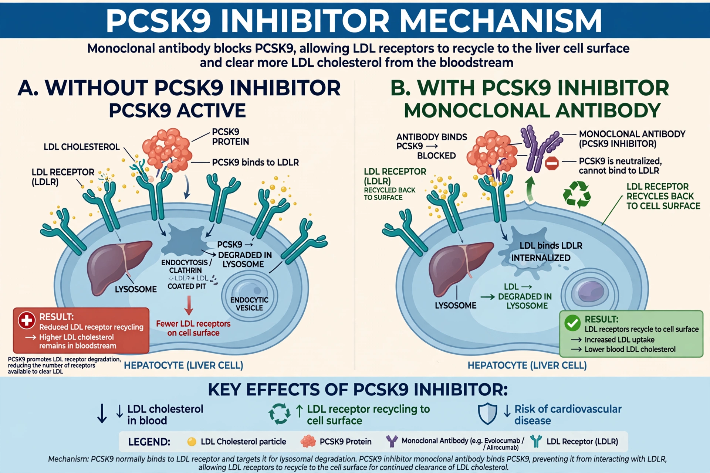

PCSK9 inhibitors are a class of lipid-lowering drugs that block proprotein convertase subtilisin/kexin type 9, a protein that degrades LDL receptors in the liver. Blocking it greatly increases LDL clearance and lowers LDL cholesterol.

PCSK9 inhibitorAlirocumab and evolocumab are monoclonal antibodies injected every two to four weeks and reduce LDL cholesterol by about 60%. Inclisiran is a small interfering RNA that suppresses PCSK9 synthesis in the liver and is given twice yearly.
They are used in familial hypercholesterolaemia and in patients with cardiovascular disease whose LDL remains high despite statins and ezetimibe. Outcome trials such as FOURIER and ODYSSEY OUTCOMES showed reduced cardiovascular events.
Injection-site reactions are the most common adverse effect. Cost has limited wider use.